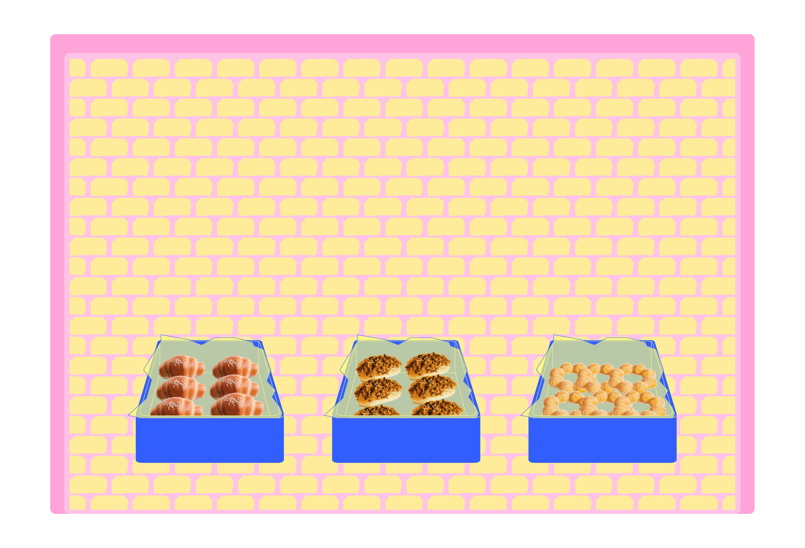
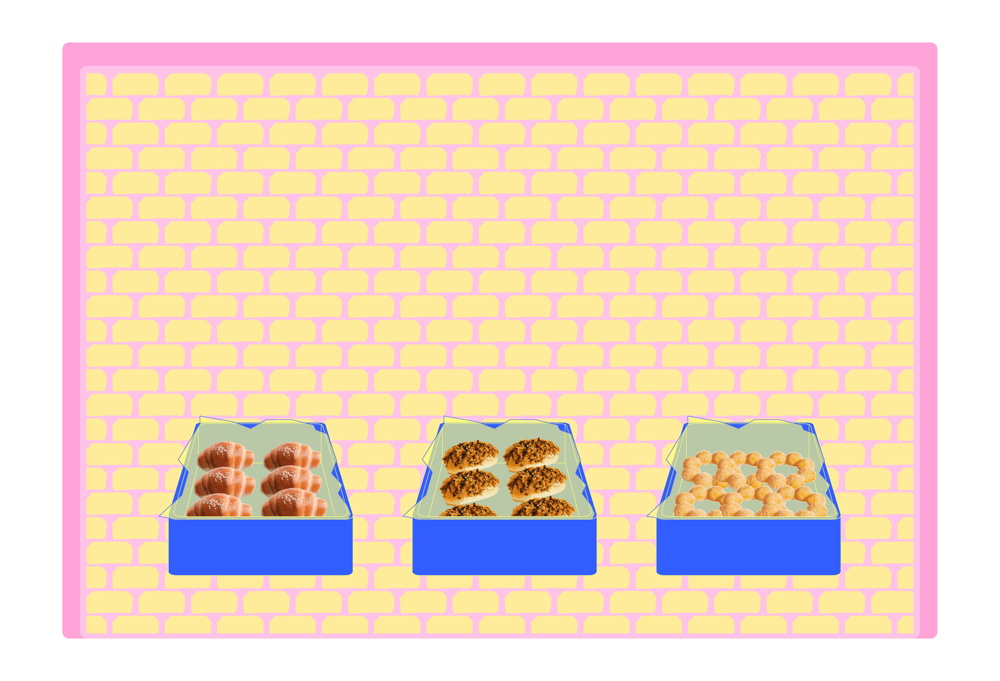

Pork Floss Bun aka. Rousong Mian Bao

 

About
- Origin: China
- The bread is soft and fluffy, while the pork floss on top is light, airy, and slightly salty. The combination creates a contrast between sweet bread and savory topping.
Tastes best with:
Milk/Tea
➮